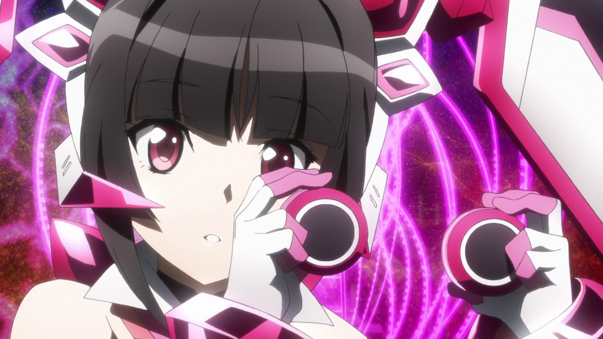

SG-i01'
Shul Shagana
Shirabe Tsukuyomi
Shirabe es una joven tranquila y reservada, pero apasionada y obstinada. Ella es ferozmente protectora de quién y qué es querido, particularmente de Kirika . Afirma que no es buena para hablar con otras personas, por lo que intencionalmente evita acercarse demasiado a personas que no son Kirika. A una edad muy temprana, Shirabe se vio atrapada en un accidente de tráfico que acabó con la vida de sus padres, y ella fue la única sobreviviente. Debido a ese accidente, perdió la mayoría de sus recuerdos y cualquier documento que explicara quién era ella. Tiene su estilo de pelea particularmente inusal, ya que consiste en sierras circulares de largo y corte alcance, como descendiente de Fine, es capas de usar unas barreras de proteccion. Su estilo musical es Techno pop y rock